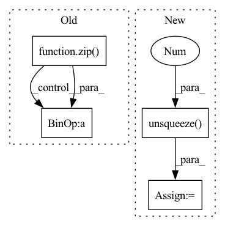

Pattern ID :24234
Before Change
with torch.no_grad():
for i, var in enumerate(vars):
for day, step in zip( log_days, log_steps) :
pred_prime = pred[:, step - 1, i] - torch.mean(pred[:, step - 1, i])
y_prime = y[:, step - 1, i] - torch.mean(y[:, step - 1, i])
loss_dict[f"acc_{var}_day_{day}"] = torch.sum(
w_lat * pred_prime * y_prime
) / torch.sqrt(After Change
) // [1, H, 1]
// clim = torch.mean(y, dim=(0, 1), keepdim=True)
clim = clim.to(device=y.device).unsqueeze(0 )
pred = pred - clim
y = y - clim
loss_dict = {}
with torch.no_grad():
for i, var in enumerate(vars):
pred_prime = pred[:, i] - torch.mean(pred[:, i])
y_prime = y[:, i] - torch.mean(y[:, i])
loss_dict[f"acc_{var}_{log_postfix}"] = torch.sum(
w_lat * pred_prime * y_prime
) / torch.sqrt(
torch.sum(w_lat * pred_prime**2) * torch.sum(w_lat * y_prime**2)
)
loss_dict["acc"] = np.mean([loss_dict[k].cpu() for k in loss_dict.keys()])
return loss_dict
In pattern: SUPERPATTERN
Frequency: 3
Non-data size: 4
Instances Fragment ID: 75285436
Project Name: aditya-grover/climate-learn
Commit Name: f2eaf94e3b70bb303f4290772bfee2a42c469038
Time: 2023-02-16
Author: ductungnguyen1997@gmail.com
File Name: src/climate_learn/models/modules/utils/metrics.py
M Class Name: AnonimousClass
N Class Name: AnonimousClass
M Method Name: lat_weighted_acc(7)
N Method Name: lat_weighted_acc(11)
M Parent Class:
N Parent Class:
M File Name: src/climate_learn/models/modules/utils/metrics.py
N File Name: src/climate_learn/models/modules/utils/metrics.py
M Start Line: 179
M End Line: 231
N Start Line: 118
N End Line: 155
Before Change
def computer_loss(self, taus, values, target_values):
// * get the quantile huber loss
loss = 0
for value, tau in zip( values, taus) :
for target_value in target_values:
u = target_value - value
huber_loss = 0.5 * u.abs().clamp(min=0., max=self.k).pow(2)
huber_loss = huber_loss + self.k * (u.abs() - u.abs().clamp(min=0., max=self.k) - 0.5 * self.k)
quantile_loss = (tau - (u < 0).float()).abs() * huber_loss
loss += quantile_loss.sum() / self.batch_size
return loss
def train(self):After Change
u = target_value.unsqueeze(1) - value.unsqueeze(-1)
huber_loss = 0.5 * u.abs().clamp(min=0., max=self.k).pow(2)
huber_loss = huber_loss + self.k * (u.abs() - u.abs().clamp(min=0., max=self.k) - 0.5 * self.k)
quantile_loss = (tau.unsqueeze(0 ) - (u < 0).float()).abs() * huber_loss
loss = quantile_loss.mean()
return loss
def train(self): Fragment ID: 75285433
Project Name: deligentfool/dqn_zoo
Commit Name: cc43e4e7e30dda5460401e24a2892af2d2699f30
Time: 2020-09-17
Author: 1027660817@qq.com
File Name: IQN/iqn.py
M Class Name: iqn
N Class Name: iqn
M Method Name: computer_loss(4)
N Method Name: computer_loss(4)
M Parent Class: object
N Parent Class: object
M File Name: IQN/iqn.py
N File Name: IQN/iqn.py
M Start Line: 118
M End Line: 127
N Start Line: 112
N End Line: 116
Before Change
p = []
Mv = []
for qt, xt in zip( q.permute(1, 0), x.permute(1, 0)) :
kt = self.k_emb_layer(qt)
vt = self.v_emb_layer(xt)
wt = torch.softmax(torch.matmul(kt, self.Mk), dim=-1)
// Read Process
rt = (wt.unsqueeze(-1) * Mvt).sum(1)
ft = torch.tanh(self.f_layer(torch.cat([rt, kt], dim=-1)))
pt = torch.sigmoid(self.p_layer(ft)).squeeze()
After Change
x = q + self.num_q * r
batch_size = x.shape[0]
Mvt = self.Mv0.unsqueeze(0 ) .repeat(batch_size, 1, 1)
Mv = [Mvt]
k = self.k_emb_layer(q)
v = self.v_emb_layer(x)
w = torch.softmax(torch.matmul(k, self.Mk.T), dim=-1)
// Write Process
e = torch.sigmoid(self.e_layer(v))
a = torch.tanh(self.a_layer(v))
for et, at, wt in zip(
e.permute(1, 0, 2), a.permute(1, 0, 2), w.permute(1, 0, 2)
):
Mvt = Mvt * (1 - (wt.unsqueeze(-1) * et.unsqueeze(1))) + \
(wt.unsqueeze(-1) * at.unsqueeze(1))
Mv.append(Mvt)
Mv = torch.stack(Mv, dim=1)
// Read Process
f = torch.tanh(
self.f_layer(
torch.cat(
[ Fragment ID: 75285444
Project Name: hcnoh/knowledge-tracing-collection-pytorch
Commit Name: c42b01b83dbe54e94f4294009fbfe8bd910e3638
Time: 2021-10-06
Author: rhc0624@gmail.com
File Name: models/dkvmn.py
M Class Name: DKVMN
N Class Name: DKVMN
M Method Name: forward(3)
N Method Name: forward(3)
M Parent Class: Module
N Parent Class: Module
M File Name: models/dkvmn.py
N File Name: models/dkvmn.py
M Start Line: 40
M End Line: 66
N Start Line: 50
N End Line: 87